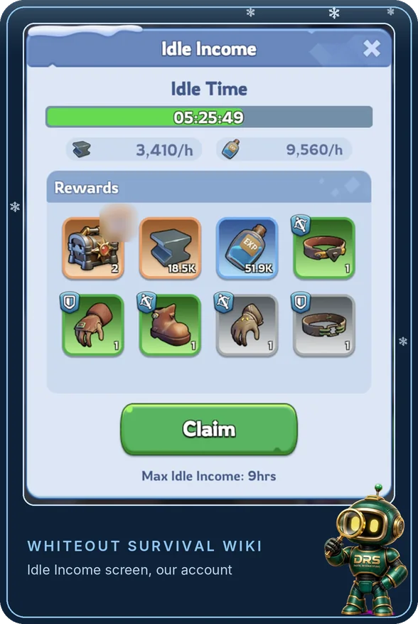

New guide, 29 October 2026. Hero XP is often confused with gear XP and skill items. This guide keeps them apart, lists where Hero XP comes from and shows how the Drill Camp reduces how much you need.
What Hero XP Is and Is Not
Hero XP raises a hero's level and does nothing else. It is a different resource from Hero Gear Enhancement XP and from skill manuals and shards, and shop discussions often blur the three together. Hero XP is not a Furnace requirement either, so you do not need it to progress your city.
Two guides say the last level up to Level 80 costs about 2.4 million Hero XP on its own. Costs rise with each level, so check the XP your own hero screen asks for.
A Level Reset returns a hero to Level 1 and refunds all the Hero XP spent on it. See our Drill Camp guide.
Heroes in a Drill Slot level up to your lowest instructor, so most players only need to feed the five core heroes by hand.
Some accounts really are short of Hero XP. Many others spread it across too many heroes, so concentrate it on your core first.
Where Hero XP Comes From
Getting More From Exploration
The idle rewards sit on the Idle Income panel in Exploration. On our account on 30 October 2026 it showed about 5 hours 25 minutes of idle time, an hourly rate for the anvil line and another for the EXP line, a grid of stored rewards, and the line “Max Idle Income: 9hrs”. The stored amounts matched the hourly rates multiplied by the idle time, so the rewards looked like rate times time, up to the cap. Your rates depend on how far you have progressed, so read your own panel.

- Collect often. Idle rewards stop building once you reach the cap. Collect on waking, at midday and before bed.
- Push the highest stage. Guides say the idle rate rises with the highest stage you have cleared. Retry after you upgrade your heroes.
- Do not farm a stalled stage. Repeating a stage you cannot clear does not produce more XP than the idle reward.
Lighthouse Intel
Intel missions refresh three times a day, about 8 hours apart. Players report 00:00, 08:00 and 16:00 UTC, but check the timer on your screen. Hero XP is one of the possible rewards, and the Searchlight is reported to max out at level 20.
- Take the useful missions. Pick the ones that pay Hero XP or something else you need.
- Watch the countdown. Unfinished missions expire. One guide says expiry timers were added in July 2026, and the stated durations differ between guides.
- Holding rewards. Players report that you can hold completed rewards. That is an event-timing trick and does not make the XP larger.
Shop Offers: What Players Say
This section is community feedback and not our own testing. Offers change, so read your own shop before you spend.
Make the Drill Camp Do the Spreading
A common problem is that players level many heroes a little instead of a few heroes a lot. The Drill Camp lets slotted heroes follow your five instructors, so you only need to spend manual XP on those five. Raise the lowest instructor first, because it sets the level the camp reaches. If you hold Hero XP in heroes you no longer use, a Level Reset refunds it, so you can put it into your core.
Where the Guides Disagree
- Idle cap. Several guides say about 9 hours, and the idle screen on our account says the same. Check yours, because we cannot see anyone else’s.
- Intel mission length. Guides disagree on how long missions last. Follow the countdown shown.
- Exploration versus Intel. We found no matched figures that compare them, so we do not rank them.
A Simple Daily Routine
- Collect Exploration. On waking, at midday and before bed.
- Complete the useful Intel missions. Keep an eye on the timers.
- Claim gifts and free recruitment. Small gains that add up.
- Use your natural stamina. Hunt beasts when the reward is worth the stamina.
- Retry Exploration after upgrades. A stronger team can clear a stage that blocked you.
- Check your lowest instructor. Do this before you spend manual XP.
What Most Players Get Wrong
Spreading XP too thin. Raise a few core heroes and let the Drill Camp cover the rest.
Mixing up resources. Hero XP, Hero Gear XP and skill items are separate. Check what an offer actually gives.
Farming a stalled stage. It does not give more XP than the idle reward.
Letting Intel expire. Unfinished missions are lost, so watch the countdown.
Buying XP with gems. Players commonly skip gem-priced offers, so check the price before you buy.
Check on your own screens. Your idle cap, the refresh times and countdown on Lighthouse Intel, what each chest and shop offer actually contains, and the stamina cost of hunting. The details here come from published guides and some could not be confirmed.